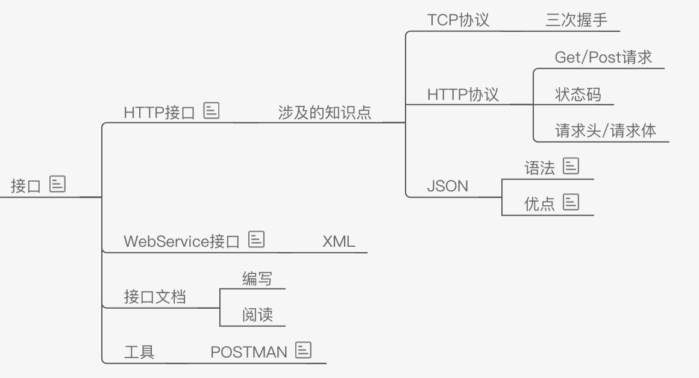
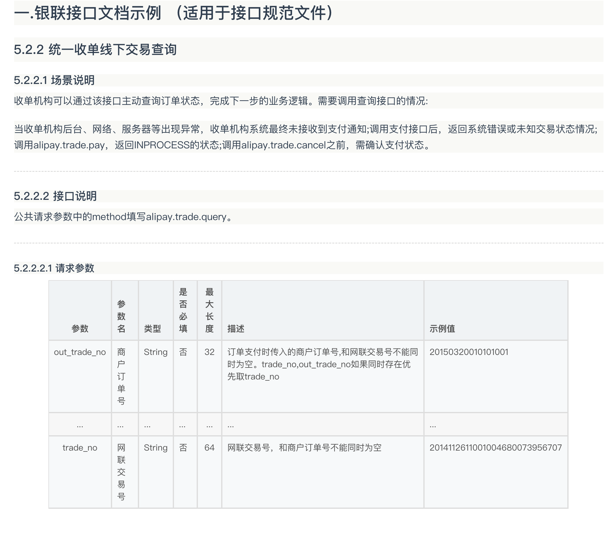
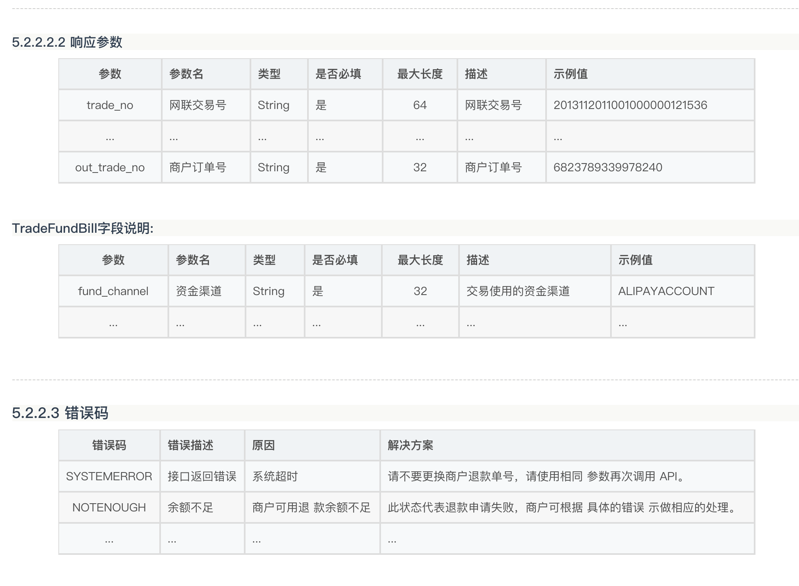
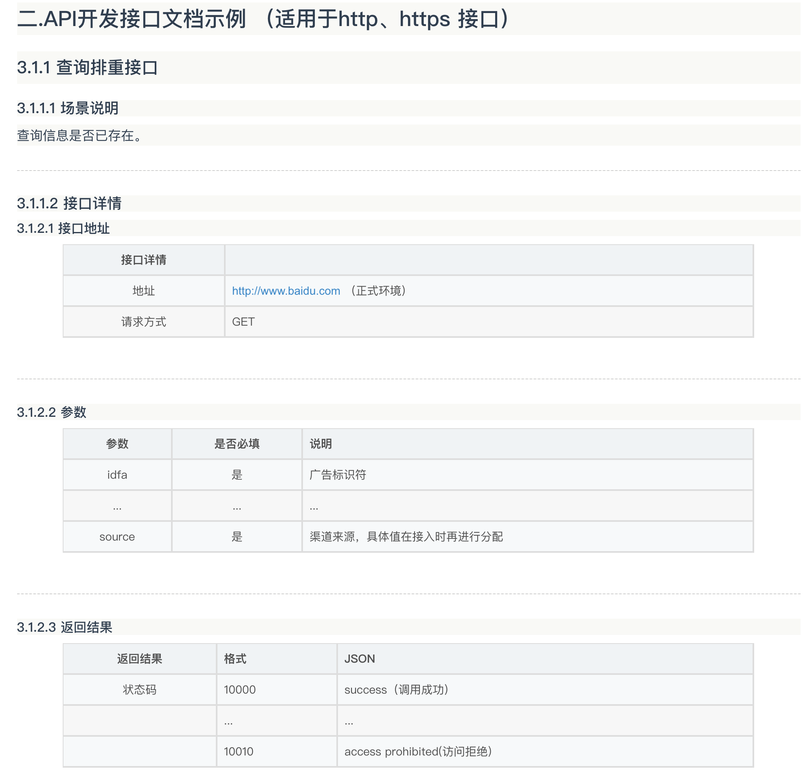
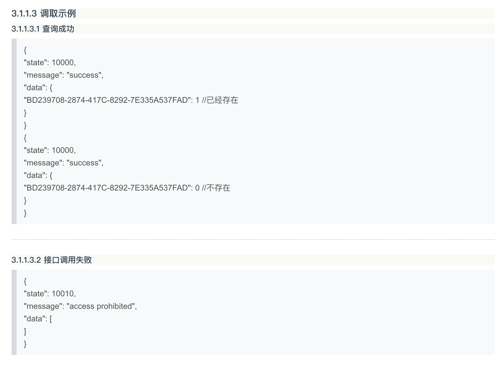

2019年12月23日23:40:57 （记录我的学习过程）
项目组组长推荐：我们先自行学习一下接口（HTTP接口）
1.举个例子来说：前台和后台进行数据交互（前后端分离架构），前台开发前台的，后台开发后台的，但是前台开发的是使用的模拟数据，又前台定义好数据接口（json格式），将接口定义好，写出接口文档，交接给后台程序员，后台程序员处理数据之后将数据转换成接口描述的格式，来传递给前台使用。我之前用过的layUI前端框架，在做数据渲染的时候，自己定义一个json格式的文件就把数据模拟出来了。后台只需要通过springmvc返回值的时候返回定义好的json格式的数据就可以了，这就是我印象中的接口格式。
2.A系统访问B系统，比如淘宝买东西，最后调用的是支付宝付款，这就是调用了支付宝的支付接口。博客什么的调用了天气的接口，能够直接快速使用，这些也都是接口。
3.对于我们公司的系统来说，我们开发的是核心系统，核心业务流程，但是呢外围又有很多的子系统是和我们的核心系统进行业务关联的，如CMS系统，财务系统，等等财务系统的数据传输给核心系统的时候，也是需要定义好确定的接口来完成数据的传递。这些也是接口
4.举例很容易，但是接口到底是什么呢？对于一个开发人员来说，对于接口这个概念，我们需要了解到什么程度？怎么去使用接口完成开发工作呢？
5.etc....
我们就需要查阅一些资料了

HTTP，TCP，JSON，这是我们学习HTTP接口的三发银弹
经过我的了解：学习HTTP接口，就是在学HTTP协议，对于这个协议，相必大家都不陌生。张嘴闭嘴就是POST，Get请求，状态码：2--，3--，4--，5-- 我们都经常见也都背诵的很熟。有系统的查阅过文档吗？哈哈。
https://developer.mozilla.org/en-US/docs/Web/HTTP/Overview
https://en.wikipedia.org/wiki/Hypertext_Transfer_Protocol超文本传输协议？在哪里见过？浏览器访问网站的时候，域名前面默认的都是HTTP吧，那么HTTP是什么呢？
Http协议是建立在TCP协议基础之上的，当浏览器需要从服务器获取网页数据的时候，会发出一次Http请求。Http会通过TCP建立起一个到服务器的连接通道，当本次请求需要的数据完毕后，Http会立即将TCP连接断开，这个过程是很短的。所以Http连接是一种短连接，是一种无状态的连接。
HTTP协议的主要特点可概括如下：
1.支持客户/服务器模式。
2.简单快速：客户向服务器请求服务时，只需传送请求方法和路径。请求方法常用的有GET、HEAD、POST。每种方法规定了客户与服务器联系的类型不同。由于HTTP协议简单，使得HTTP服务器的程序规模小，因而通信速度很快。
3.灵活：HTTP允许传输任意类型的数据对象。正在传输的类型由Content-Type加以标记。
4.无连接：无连接的含义是限制每次连接只处理一个请求。服务器处理完客户的请求，并收到客户的应答后，即断开连接。采用这种方式可以节省传输时间。
5.无状态：HTTP协议是无状态协议。无状态是指协议对于事务处理没有记忆能力。缺少状态意味着如果后续处理需要前面的信息，则它必须重传，这样可能导致每次连接传送的数据量增大。另一方面，在服务器不需要先前信息时它的应答就较快。
这个HTTP不是我们今天关注的重点，这些基础知识还请自行补充。
看到上面说HTTP是基于TCP协议基础之上的，那么TCP是什么呢？提到TCP，大家想到的还是三次握手？反正我是这样。。就知道三次握手，缺不知道为了什么握手了，惭愧惭愧。
传输控制协议（TCP，Transmission Control Protocol）是一种面向连接的、可靠的、基于字节流的传输层通信协议，由IETF的RFC 793 [1] 定义。
TCP旨在适应支持多网络应用的分层协议层次结构。 连接到不同但互连的计算机通信网络的主计算机中的成对进程之间依靠TCP提供可靠的通信服务。TCP假设它可以从较低级别的协议获得简单的，可能不可靠的数据报服务。 原则上，TCP应该能够在从硬线连接到分组交换或电路交换网络的各种通信系统之上操作。
好吧，内容比较官方，引用自：百度百科，其他参考资料：
https://en.wikipedia.org/wiki/TCP
https://developer.mozilla.org/en-US/search?q=TCPJSON是JavaScript Object Notation的缩写，它是一种数据交换格式。
在JSON出现之前，大家一直用XML来传递数据。因为XML是一种纯文本格式，所以它适合在网络上交换数据。XML本身不算复杂，但是，加上DTD、XSD、XPath、XSLT等一大堆复杂的规范以后，任何正常的软件开发人员碰到XML都会感觉头大了，最后大家发现，即使你努力钻研几个月，也未必搞得清楚XML的规范。终于，在2002年的一天，道格拉斯·克罗克福特（DouglasCrockford）同学为了拯救深陷水深火热同时又被某几个巨型软件企业长期愚弄的软件工程师，发明了JSON这种超轻量级的数据交换格式。道格拉斯同学长期担任雅虎的高级架构师，自然钟情于JavaScript。他设计的JSON实际上是JavaScript的一个子集。
在JSON中，一共就这么几种数据类型：
并且，JSON还定死了字符集必须是UTF-8，表示多语言就没有问题了。为了统一解析，JSON的字符串规定必须用双引号""，Object的键也必须用双引号""。
{
"name": "小明",
"age": 14,
"gender": true,
"height": 1.65,
"grade": null,
"middle-school": "\"W3C\" Middle School",
"skills": [
"JavaScript",
"Java",
"Python",
"Lisp"
]
}In computing, an interface is a shared boundary across which two or more separate components of a computer system exchange information. The exchange can be between software, computer hardware, peripheral devices, humans, and combinations of these.[1] Some computer hardware devices, such as a touchscreen, can both send and receive data through the interface, while others such as a mouse or microphone may only provide an interface to send data to a given system.[2]
在计算中，接口是一个共享边界，计算机系统的两个或多个单独组件在该共享边界上交换信息。 可以在软件，计算机硬件，外围设备，人员以及这些的组合之间进行交换。[1] 某些计算机硬件设备（例如触摸屏）可以通过该接口发送和接收数据，而其他计算机硬件设备（例如鼠标或麦克风）可能仅提供将数据发送到给定系统的接口。[2]
参考：wiki https://en.wikipedia.org/wiki/Interface_(computing)
我们这里着重介绍的是，HTTP接口。
还是没说什么是HTTP接口？
不要管那些花里胡哨的，本质就是一个接口，作用就是基于http协议进行远程通信。




参考：https://blog.csdn.net/qq_41961113/article/details/80347341
还可以参考阿里云啊，网易云啊，腾讯啊，微信啊等提供的官网API接口文档。
写完这些，我还是比较蒙蔽的，还是只是其然，不知其所以然，为什么呢，因为啊，我还没有在实际开发中用到接口。所以，不去用，你永远想象不到他能干什么。所以说，在学习阶段，找几个实战案例来学习一下，会对这个东西的应用稍微明确一点。我便搜集了一下开发案例来供自己参考。
参考实战案例:
当然这些工具，是从他们实战开发的实例中，get到的~
我写这个，不代表我会了。我也会和我的同事，朋友们一起讨论这个知识点，相互学习，相互补充，共同把知识相辅相成的学到自己的脑袋里。
不要管那些花里胡哨的，本质就是一个接口，作用就是基于http协议进行远程通信。